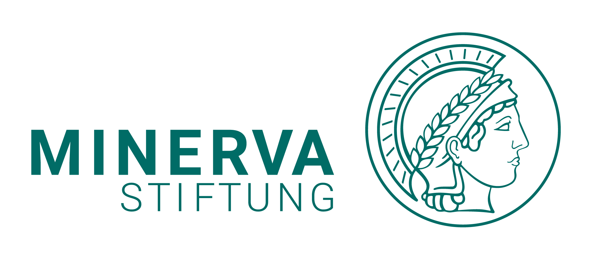

Why ResXR?
Addressing Technical Barriers
Creating immersive experiments demands specialized programming skills. ResXR provides an accessible Unity template designed for scientific applications, ensuring precision without building from scratch.
Data Standardization
The lack of standard formats limits reproducibility. ResXR automates the conversion of complex tracking data into Motion-BIDS compliant datasets, ready for immediate analysis and sharing.
Toolkit Architecture
A powerful combination of a Unity recording template and a Python processing pipeline.
Stage 1: Unity Base Template
Standalone Data Capture
A Unity 6 template for behavioral experiments running on Meta Quest 2/3/Pro.
- 100 Hz Recording: Head, hands, eyes, face, and body tracking in Unity's
FixedUpdate. - Core Components:
ResXRPlayerandResXRDataManagerfor synchronized collection. - Built-in Paradigms: Demo experiments for Binary Choice, Maze Navigation, and Museum Viewing.
Stage 2: Python Data Pipeline
Processing & Validation
Converts raw tracking data into Motion-BIDS compliant datasets with visual quality reports.
- BIDS Compliance: Generates
motion.tsv,events.tsv, and LATENCY channels. - Quality Validation: Detects tracking loss, sampling irregularities, and tracks eye closures.
- Interactive Reports: HTML visualizations of flag times mapped to global
timeSinceStartup.
Supported by

